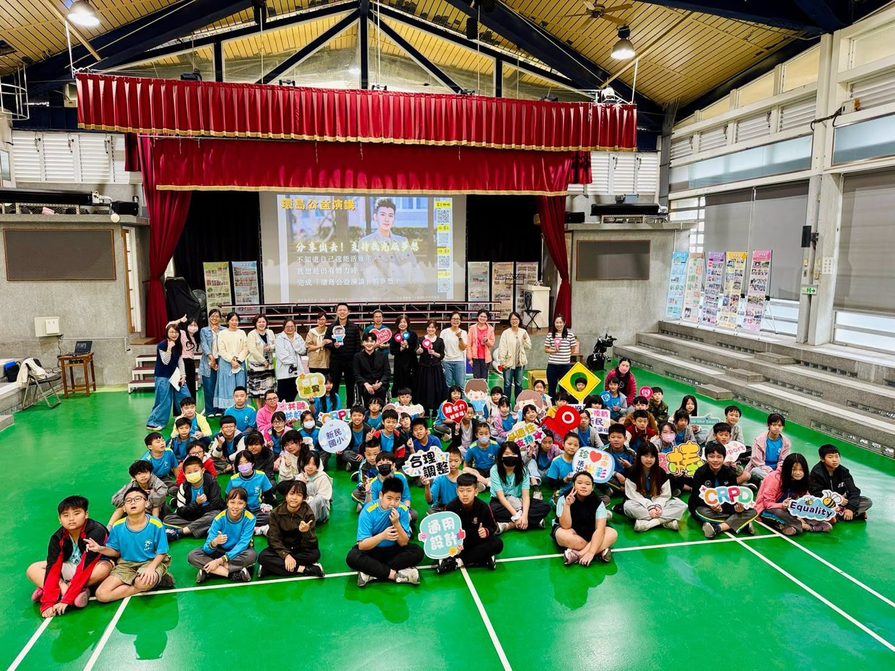
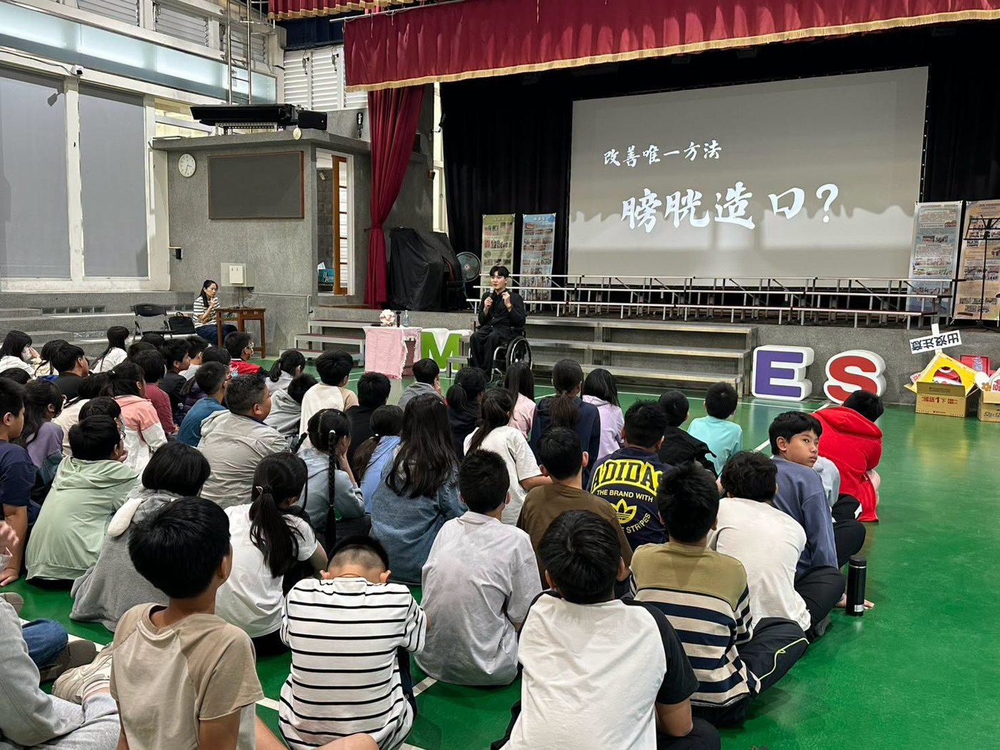
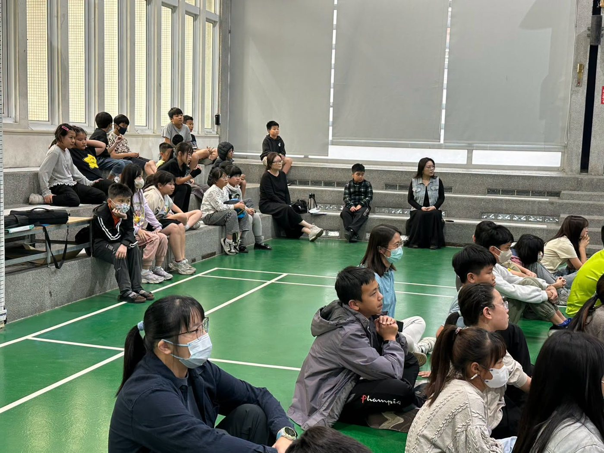

❤️ A life education talk helped us see the weight that different lives carry — and learn again how to understand and treat one another with kindness.
We had been eagerly waiting for Teacher 姚富菻 (Yao Fu-lin), who arrived at Hsinmin’s front gate driving his wheelchair-accessible electric vehicle. Calm and unhurried, he asked where the talk would be, settled in, and was fully prepared to share with the children well before it began.
🧡 Our fifth and sixth graders were wonderful listeners, giving their full attention to his life story. In just under two hours, he shared the deepest lessons from decades of his life — and we were so lucky to feel some of them through his words.


孩子們專心聆聽富菻老師的生命故事
- 💙Listen to your body — cherish our healthy bodies, and pay attention to every signal they send傾聽身體的聲音
- 💛Build a kinder world: empathy and understanding — something that is only an inconvenience to us can be a barrier someone else can hardly cross. A little more understanding and a little less blame — thinking of others is where empathy begins. We never know what the people around us are going through; a kind word or a helping hand can change their world. When we find a place that isn’t friendly, let’s try to be part of changing it.打造友善的環境—同理心與理解他人
- 💜Love and blessings give life strength — through many low points — fitting in with classmates, setbacks at work, and a body that is still slowly weakening — Teacher Yao’s real change began when he took the first step: opening his heart, joining others, and joining school clubs. Life should never be defined by illness; everyone has their own value and light.愛與祝福是支撐生命的力量
Teacher Yao told us that in the past, he often wanted to give up. What kept him going was that his parents never gave up on him — they cared for him with all their hearts, hoping only that he would grow up healthy and happy.
Dear children, we often think the future is long, and we take health, time with family, and ordinary days for granted. His story reminds us that walking freely, sleeping peacefully, living simply, and being loved by our families are all blessings worth being thankful for.
❤️ In two talks, morning and afternoon, his sincere and moving story touched the children’s hearts — and brought tears to the eyes of many teachers, too. At the end, the principal encouraged everyone to be a person with warmth: kinder, and more understanding of others. The principal especially reminded our sixth graders, who will soon graduate, to treasure their teachers and classmates — because some companionship feels ordinary now, but turns out to be one of life’s most precious gifts when it’s time to say goodbye.
- ❤️Life never comes with a guaranteed “later” — what we truly have is this very moment.生命從來沒有保證的以後，我們真正擁有的，就是此刻當下。
- ❤️Light never shines just for itself — it shines to light up one another.原來，光從來不是為了自己閃耀，而是為了照耀彼此。
- ❤️What matters most in life isn’t its length, but its warmth.生命中最珍貴的，不是它的長度，而是它的溫度。
💫 After the talk, some children came up on their own to ask for a hug and to cheer him on — a small, warm moment that quietly planted seeds in everyone’s hearts. We hope these seeds of love will sprout, so that Hsinmin’s children have love in their hearts and light in their eyes.
💞 Be a person with warmth — may we all become a beam of light in someone else’s life.做一個有溫度的人，願我們都能成為別人生命中的一束光。
活出生命的光— #姚富菻
❤一場生命教育的分享，讓我們看見不同生命所承受的重量，也重新學習如何理解與善待彼此。
#富菻老師 在我們引頸期盼下，風塵僕僕地駕駛著他的輪椅輔助電動車，遠遠的從那一方忽然乍到的來到新民大門口，節奏明快，詢問了講演的地點，十分從容地就了位，時間還沒到，但他儼然已為了今天與孩子的分享做足了準備。
🧡今天的五六年級，表現都是ㄅ級分，專心聆聽老師的生命故事，體會他口中看似輕描淡寫的親身經驗，短短近兩小時，卻是他幾十年生命裡，最深的體會與感觸，而我們何其幸運，有機會透過今天的分享，感受一些生命的體悟。
📌本日分享精華
傾聽身體的聲音--珍惜我們健康的身體，也正視身體發出的每一個訊號。
💛打造友善的環境—同理心與理解他人
--別人的不方便，是他難以跨越的障礙，卻可能是我們從未經歷過的日常；多一點體諒，少一點責怪，多為別人想一想，就是同理心的開始。我們永遠不知道，身邊的人正經歷著什麼。也許一句關心、一個協助、一點體諒，就能讓別人的世界變得不一樣。所以當我們發現環境不友善，請試著成為改變它的一份子。
💜愛與祝福是支撐生命的力量
歷經人生重重低谷的富菻老師，從同儕融入、工作挫折，與到現在仍逐步下滑的身體，每一步他都走得艱辛，但是真正讓他有所改變的開始，是因為他為自己踏出了第一步---打開心房，走進人群，參加學校社團，用細心贏得信任，靠著自己的努力，讓自己的人生更精采，孩子們從老師身上看見生命不該被疾病定義，#每個人都有自己的價值與光芒。他告訴我們:一句祝福、一份相信、一個溫暖的眼神，都可能成為別人繼續走下去的力量。
富菻老師說:其實，過去的他，也常常想放棄。而讓他願意堅持，努力活下去的原因，#是因為他的父母從來沒有放棄，全心全意地照顧他，只希望他能夠健康、快樂的長大。親愛的孩子們，我們總以為未來還很長，總覺得健康、陪伴與平凡的日常理所當然。直到聽見富菻老師的生命故事，才發現，原來能夠自在地走路、安心地睡覺、簡單地生活，被家人好好的疼愛著，都是值得感恩的幸福。
❤️ 今天上午、下午兩場生命教育講座，富菻老師真摯而深刻的生命故事，不只觸動了孩子們的心，也讓在場不少師長紅了眼眶，甚至流下感動的眼淚。那份感動，不只是對生命韌性的敬佩，更是對愛、陪伴與珍惜有了更深一層的體會。
講座最後，校長也勉勵所有孩子，希望大家都能做一個 #有溫度的人，讓自己成為更善良、更懂得體諒別人的人。尤其是即將畢業的六年級孩子們，離開熟悉的新民校園之前，請好好珍惜身邊的師長與同學，珍惜這些年一起學習、一起成長的情誼。因為有些陪伴，當下或許覺得平凡，等到離別時，才會發現那是生命中多麼珍貴的禮物。
今天，六年級有更多孩子深受感動，也許他們未必能完整說出心中的感受，但那一刻的 #眼淚、感動與觸動，相信都會在心裡留下深刻的印記。
願這場講座帶給孩子們的，不只是一時的感動，而是一輩子都能帶著走的善良與溫柔。 ❤️
💗久久無法忘懷的金言玉語：
❤️生命從來沒有保證的以後，我們真正擁有的，就是此刻當下。
❤️原來，光從來不是為了自己閃耀，而是為了照耀彼此。
❤️ 生命中最珍貴的，不是它的長度，而是它的溫度。
💫座談後孩子的主動要求擁抱、加油，是這次分享的小小插曲，這個溫暖的舉動，輕輕的無聲的在每個人的心底種下小小種子，希望愛的小苗悄悄發芽，希望新民的孩子心裡有愛，眼底有光。
💞做一個有溫度的人，願我們都能成為別人生命中的一束光。
Tap 🔊 to listen · 點喇叭聽發音
Empathy means understanding how others feel.同理心就是理解別人的感受。
He gets around in a wheelchair.他坐著輪椅行動。
Listen to every signal your body sends.傾聽身體發出的每一個訊號。
The children gave him a warm hug.孩子們給了他一個溫暖的擁抱。
Every day with family is precious.和家人在一起的每一天都很珍貴。
Everyone has their own value.每個人都有自己的價值。
Match the word to its meaning
把英文和中文配對
Matched 配對成功：0 / 6